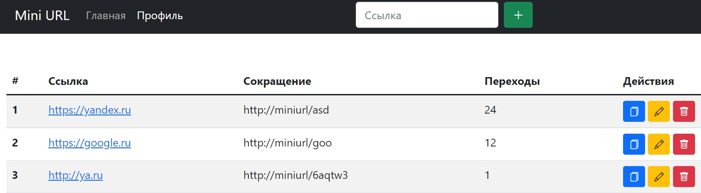

Mini URL - сервис сокращения ссылок


Ссылка:
Самозанятый
Ссылка на GitHub:
https://github.com/SadovnikPV/USSRTank
Сервисы, языки и технологии, используемые при разработке:
HTML5, CSS3, JS, PHP, MySQL
Описание проекта:
У google есть, у Яндекс есть, даже у Вконтакте есть. А теперь и у нас есть!
Сервис для сокращения длинных ссылок MiniURL! Авторизация, просмотр статистики, редактирование
ссылок и многое другое вы можете использовать уже сейчас, воспользовавшись нашим сервисом!
Объявляем войну длинным ссылкам!
Комментарии разработчика:
Серверная часть состоит из БД с двумя связанными таблицами, и несложного скрипта авторизации.
Проект, как и предыдущий, еще дорабатывается, как в плане дизайна, так и в плане функционала.